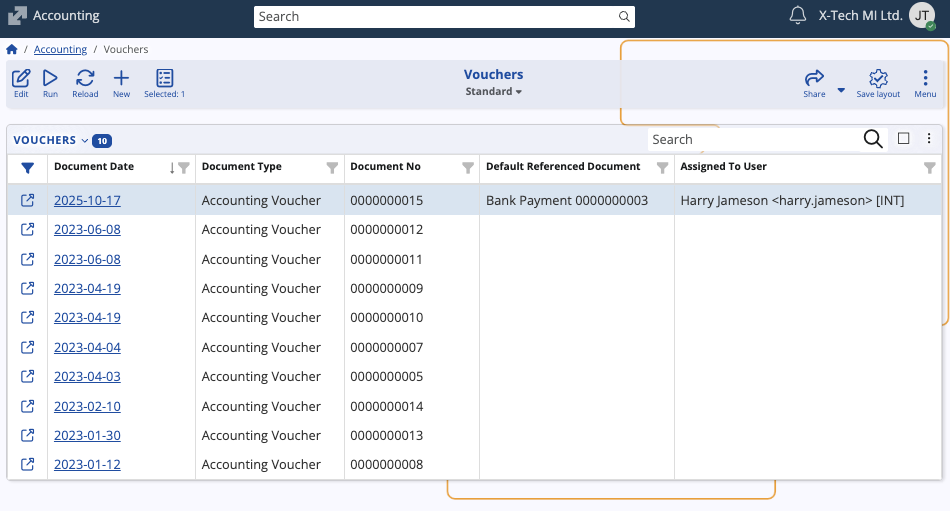
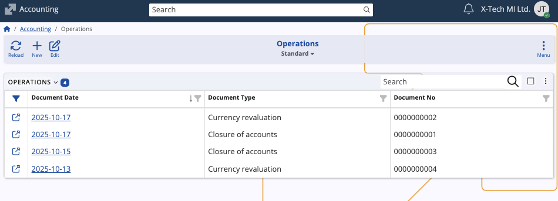
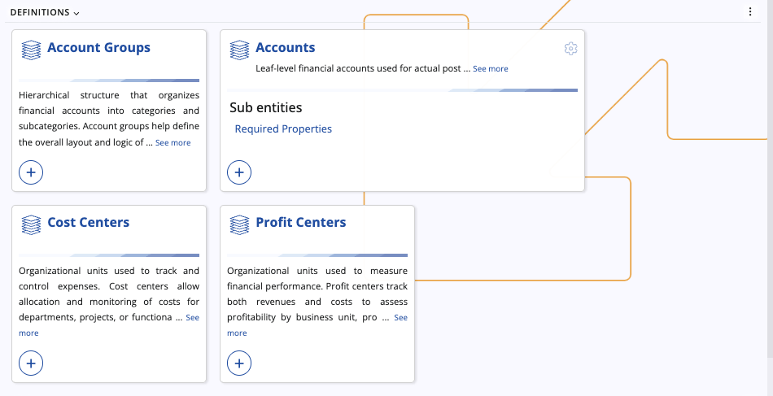
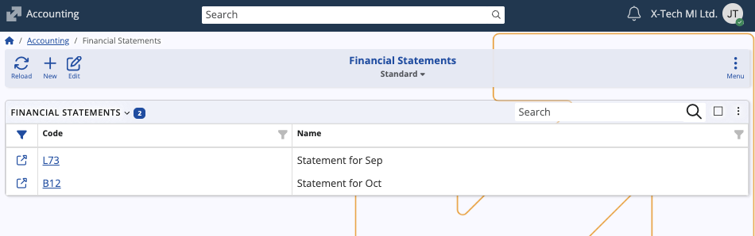
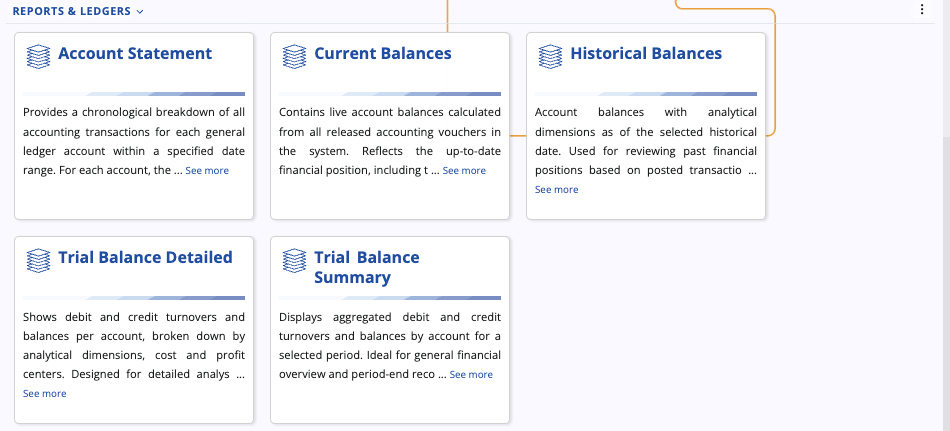

Accounting
Accounting is an integral component of the Finance module. Its primary purpose is to establish an auditable, rule-based environment for recording, summarizing, and presenting the financial position of an organization.
This submodule integrates foundational definitions with operational documents and provides the necessary reports, like trial balances and financial statements, for both internal management and statutory compliance.

Interface
Accounting is segmented into three primary areas:
Documents & Operations
These components represent the actual financial events recorded in the system.
Vouchers
Represents transactional accounting documents that have been finalized and posted, serving as the official record for general ledger entries. They can reference a default document that initiated the voucher creation.

Operations
Represents system-level accounting processes or non-standard adjustments executed via specific documents. These transactions are typically automated or periodic procedures.

Definitions
These components establish the structural foundation and rules of the accounting system.

Accounts
The leaf-level financial accounts used for actual posting (the core of the chart of accounts).
Account Groups
A hierarchical structure used to organize individual accounts into categories and subcategories, defining the overall layout and logic of the chart of accounts.
Cost Centers
Organizational units used to track and control expenses, allowing allocation and monitoring of costs for specific departments, projects, or functions.
Profit Centers
Organizational units used to measure financial performance by tracking both revenues and costs, assessing profitability by business unit, product, or project.
Financial Statements (SETUP)
Defines user-created financial statement reports (e.g., Balance Sheet, Income Statement).

Reports & Ledgers
These components provide the mechanisms for querying, analyzing, and summarizing the transactional data.

Account Statement
Provides a chronological breakdown of all accounting transactions for a specific ledger account within a specified date range.
Current Balances
Represents the live, up-to-the-minute balances for all accounts, calculated from released accounting vouchers. It reflects the current financial position and can be segmented by analytical dimensions like Enterprise Company, Cost Center, Profit Center, Account, and Currency.
Historical Balances
Represents time-stamped ledger entries showing account balances as of specific historical dates. It is used for reviewing and reporting on past financial positions, providing a chronological record segmented by Date, Account, Item Key, Currency, Cost Center, and Profit Center.
Trial Balance Detailed
Shows debt and credit turnovers and balances per account, broken down by analytical dimensions (e.g., Cost and Profit Centers), designed for detailed analysis.
Trial Balance Summary
Displays aggregated debt and credit turnovers and balances by account for a selected period, ideal for general financial overview and period-end reconciliation.
Note
The screenshots taken for this article are from v.26 of the platform.